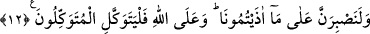

NEDEN ALLAH’A
DAYANIP GÜVENMEYELİM?
9. Sizden öncekilerin, Nuh, Âd ve Semûd kavimlerinin ve onlardan sonrakilerin
haberleri size gelmedi mi? Onları Allah’tan başka kimse bilmez. Peygamberleri
kendilerine mucizeler getirdi de onlar, ellerini ağızlarına koydular ve: “Biz, size
gönderileni inkâr ettik ve bizi kendisine çağırdığınız şeye karşı derin bir şüphe
içindeyiz.” dediler.
10. Peygamberleri dedi ki: “Gökleri ve yeri yaratan Allah hakkında şüphe mi
var? Halbuki O, sizin günahlarınızdan bir kısmını bağışlamak ve sizi muayyen bir
vakte kadar ertelemek için sizi (hak dine) dâvet ediyor.” Onlar: “Siz de bizim gibi
bir insandan başka bir şey değilsiniz. Siz bizi atalarımızın taptıkları şeylerden
döndürmek istiyorsunuz. Öyleyse bize apaçık bir delil getirin!” dediler.
11. Peygamberleri onlara dediler ki: “(Evet) biz de sizin gibi bir insandan başkası
değiliz. Fakat Allah nîmetini kullarından dilediğine lütfeder. Allah’ın izni olmadan
bizim size bir delil getirmemize imkân yoktur. Mü’minler ancak Allah’a güvenip
dayansınlar.”
12. “Hem bize yollarımızı göstermişken neden Allah’a dayanıp güvenmeyelim?
Sizin bize verdiğiniz eziyete elbette katlanacağız. Tevekkül edenler yalnız Allah’a
tevekkülde sebat etsinler.”